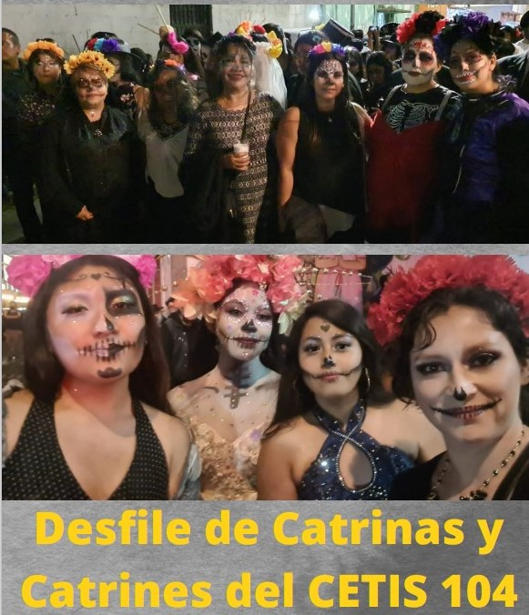
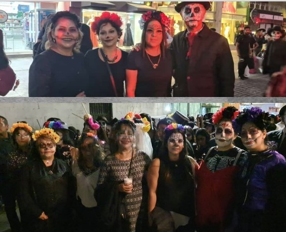

Catrinas Día de Muertos 2022
El CETIS 104 se llenó de color y tradiciones en el reciente desfile de Catrinas y Catrines, celebrado en honor al Día de Muertos. Este evento emblemático permitió a los alumnos expresar su creatividad y rendir homenaje a una de las tradiciones más significativas de México.
Alumnos de todas las especialidades participaron con entusiasmo, vistiendo elaborados trajes y maquillaje que representaban la riqueza cultural de esta festividad. El desfile no solo fue una muestra de creatividad, sino también una oportunidad para reflexionar sobre la importancia de recordar a aquellos que han partido y celebrar la vida a través de la muerte.
Este evento resalta el compromiso del CETIS 104 por fomentar la cultura y las tradiciones mexicanas, uniendo a la comunidad educativa en una celebración que refuerza la identidad y el orgullo de pertenecer a esta institución. ¡Fue un día inolvidable lleno de alegría y significado!